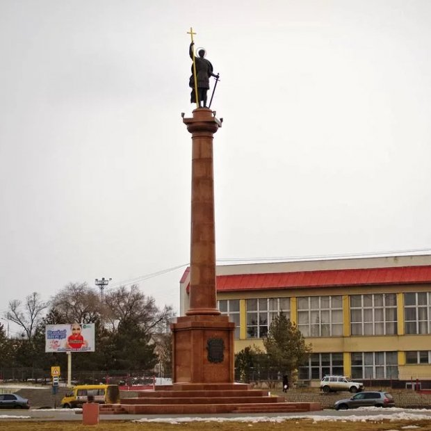

Памятник Дмитрию Солунскому
Памятник Святому великомученику Дмитрию Солунскому в Камышине установлен 8 ноября 2013 года, стал одной из визитных карточек города. Святой великомученик Дмитрий Солунский со дня основания города считается небесным покровителем Камышина, носившего до конца XVIII века имя Дмитриевск. Ежегодно 8 ноября традиционно отмечается как День памяти Святого. Существует предание, что Дмитрий Солунский, известный своим заступничеством и благими делами, спас Дмитриевск от захвата татарами, ослепив их и повелев не трогать «его город».